Question 1 — Exploration des données
Requêtes 1.a, 1.c, 1.d, 1.f, 1.h et 1.i. À gauche la capture Access de la requête, à droite le résultat.
1.a — Clients parisiens, triés par société
Coordonnées des clients dont la ville est Paris, liste triée par société.
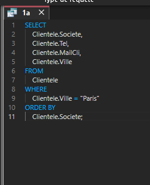
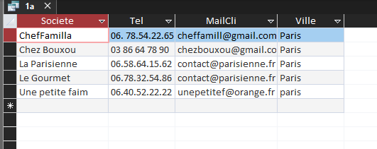
1.c — Viandes ou poissons avec un coût d’achat de plus de 50 €
Produits des catégories viandes ou poissons, avec fournisseur et pays de provenance.
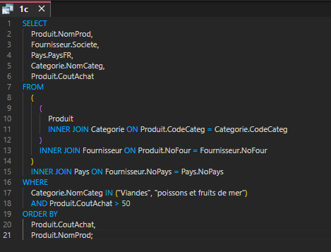
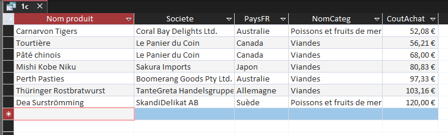
1.d — Fournisseurs qui proposent de la viande ou du poisson
Fournisseurs qui ont au moins une des deux catégories au catalogue.
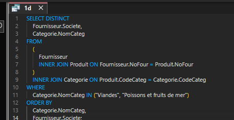
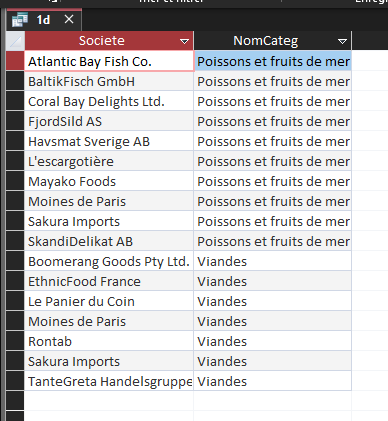
1.f — Produits conditionnés dans du carton ou du verre
Produits dont le conditionnement est en carton ou en verre.
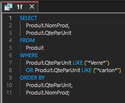
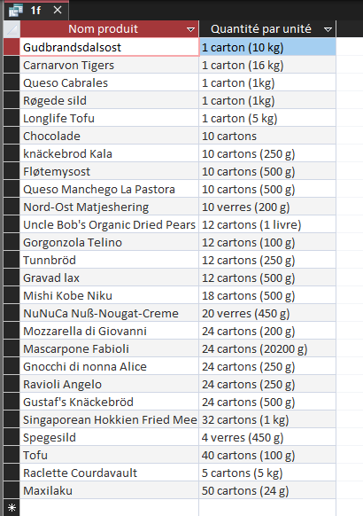
1.h — Fournisseurs qui ne proposent que des desserts
Fournisseurs dont tous les produits du catalogue sont des desserts.
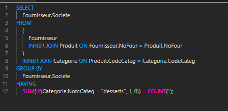
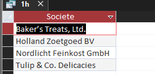
1.i — Fournisseurs hors France sans produit au catalogue
Fournisseurs étrangers qui n’ont pas encore de produits chez KDou.
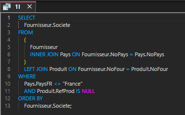
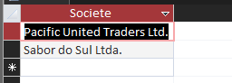